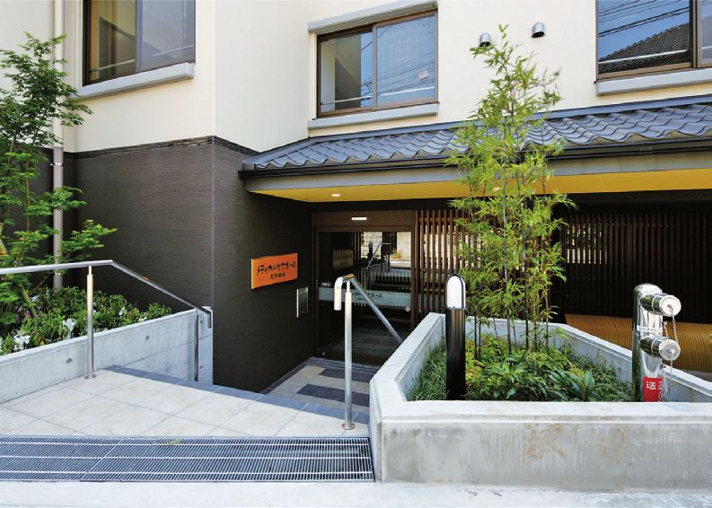
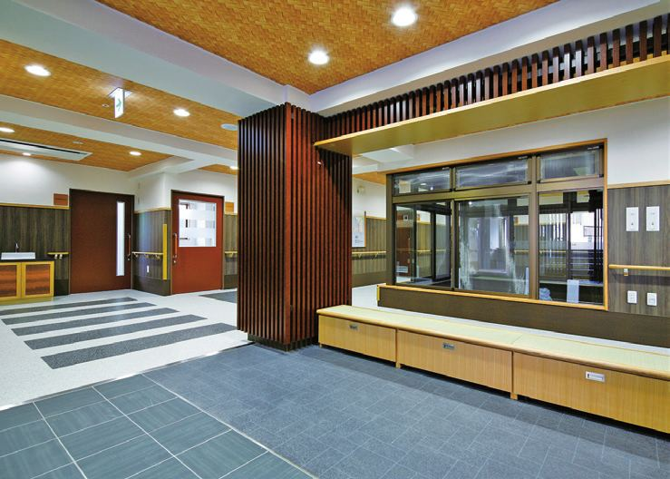
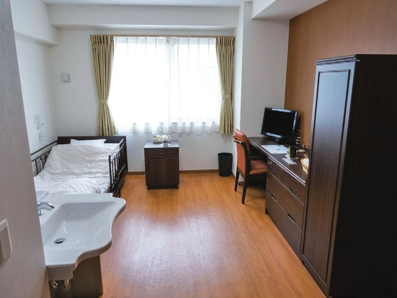
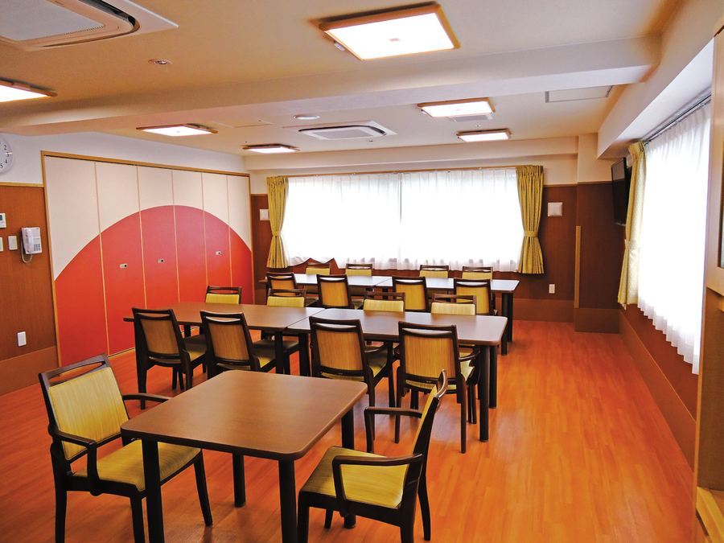
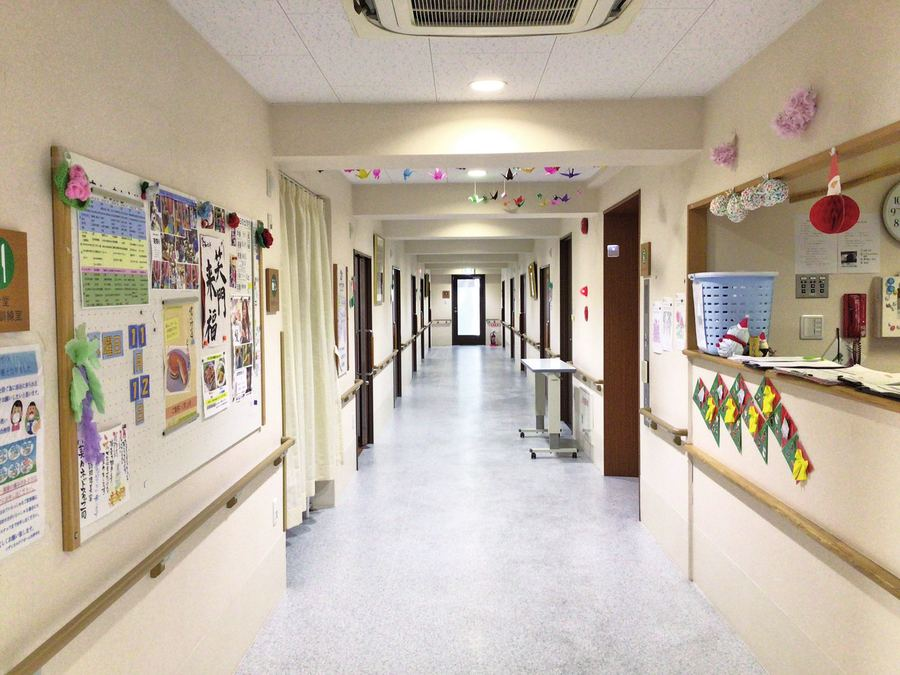
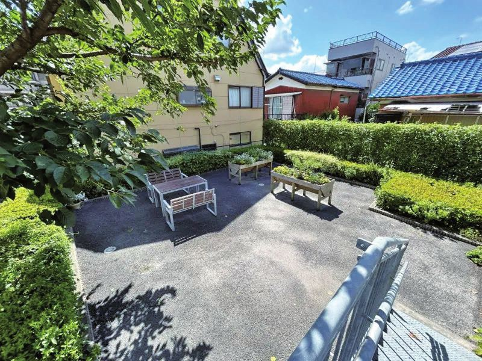
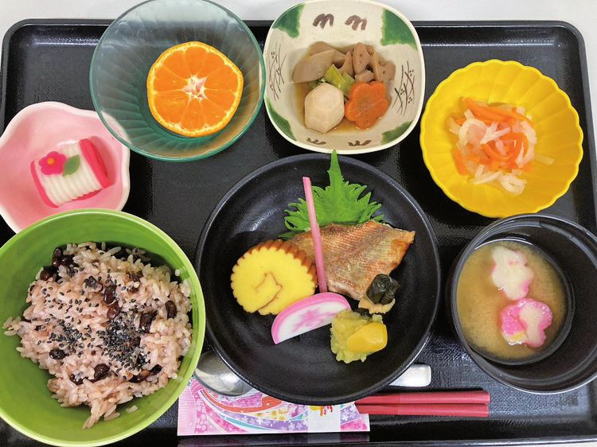
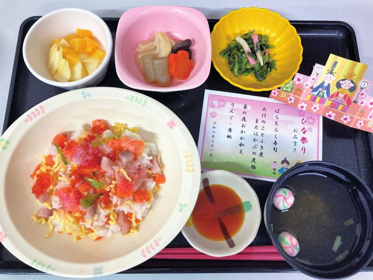

特定施設入居者生活介護
要介護の認定を受けた方が、お住まいになりながら介護・生活支援を受けていただくサービスです。介護付き有料老人ホームの基本のかたちになります。
これからお住まいになる方へ24時間365日の医療サポートがあるからこそ叶う、心からの安心。明るく充実した住環境で、笑顔あふれる心地よい毎日が始まります。
5つのおすすめポイント
快適な全室個室
50室すべてが個室です（18〜19.7㎡）。介護用電動ベッド・寝具・家具をご用意しているので、身のまわりのものだけでお入りいただけます。
24時間365日の安心
夜間の見守り体制に加え、グループの医師が24時間365日当直。常駐の看護師とすぐに連携できる救急体制を整えています。
医療法人による運営
医療法人博滇会が運営しています。内科の定期往診に加え、他施設では珍しい精神科医の臨時診察にも対応できます。
多彩な行事と食事
お正月・ひなまつりなどの行事食をはじめ、季節を感じていただけるお食事をご用意しています。日々のレクリエーションもあります。
個別ケアと看取り
お一人おひとりに合わせたケアを行います。最期までこの場所で過ごしたいというご希望にも、医師・看護師と連携して対応します。
医療法人が運営しているからこそ、できることがあります。
内科の定期往診に加え、他施設では珍しい「精神科医の臨時診察」と、薬剤師同行による確実なお薬管理を行います。
夜間の見守り体制に加え、グループの医師が24時間365日当直。常駐看護師との即時連携で万全の救急体制を整えています。
法人内のPT・OT・ST（理学療法士／作業療法士／言語聴覚士）が直接訪問し、お一人おひとりに最適な個別訓練を提供します。
看護師が日々の健康状態を細やかに観察し、必要な医療処置や急変時の迅速な対応、医師・ご家族との密な連携により、安心して暮らせる毎日を支えます。
表に無い処置についても、まずはご相談ください。ご本人の状態をうかがったうえで、受け入れの可否をご案内します。
ここで始まる、新しい「楽しい毎日」。建物は4階建てで、2階から4階がお住まいです。3階・4階も2階と同じお部屋の配置になっています。






お部屋には必要なものがそろっているので、身のまわりのものだけでお入りいただけます。いつでもスタッフの手が届く設計です。
要確認写真はパンフレットのデータから取り出したものです。人が写っている写真（レクリエーション・職員）は、あらためて掲載の許可が必要なため入れていません。許可が取れたら追加してください。


お正月、ひなまつり。季節の行事に合わせたイベント食をご用意しています。目で見て楽しんでいただけるよう、盛りつけにも気を配っています。
ふだんのお食事は、お一人おひとりの状態に合わせてご用意します。かむ力・飲み込む力に合わせた形のお食事も、ご相談ください。
ずっとお住まいになる方も、短い期間だけの方も、まずはお試しの方も。暮らしの状況に合わせて選んでいただけます。
要介護の認定を受けた方が、お住まいになりながら介護・生活支援を受けていただくサービスです。介護付き有料老人ホームの基本のかたちになります。
これからお住まいになる方へ短い期間だけご利用いただけます。ご家族の通院・お仕事・休息のあいだ、安心してお預けいただけます。
短い期間だけ利用したい方へ要支援の認定を受けた方向けのサービスです。いまの元気を保ちながら、必要な支援を受けて暮らしていただけます。
要支援の認定を受けた方へお部屋が空いているときに、実際に泊まって暮らしを体験していただけます。先に生活のリズムを知っておくと、そのあとの入居がスムーズです。
まず試してみたい方へ要確認ご利用料金・体験入居の費用・空室状況はページに載せていません。改定があるため、お電話でご案内する形にしています。載せる場合は「いつ時点の金額か」を明記し、更新の担当を決めてください。
行事の様子や日々のできごとを、職員が投稿しています。
Instagramで見る要確認アカウントのアドレスが未確定です。決まったら上のリンク先を書き換えてください。アカウントが無ければ、この節ごと削除してかまいません。
入力なしで、そのままご覧いただけます。印刷してお使いください。
開けない場合は、郵送でお送りすることもできます。お気軽にお申しつけください。
ご本人の状態がわからない段階でも大丈夫です。ご家族だけのご見学もできます。
受付時間はお電話にてご確認ください。